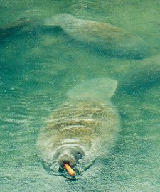
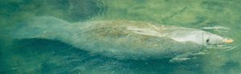

Pictures of Florida's Wild Animals
Pictures of Florida's Wild Animals
|
Manatee These creatures are truly Gentle Giants.
They are one of the most easy going animals you'll ever meet, they love to just hang out with
their friends and family and play, take it easy and eat. Note that they are NOT dumb, they are very smart.
The best
place to see them are at power plants in the winter. The power plants pump out water that's kind of
warm, so being smart fellers the manatees gather there to hang out and warm up. I recommend Big Bend
in Apollo beach if you are in Tampa, or a little further north is Crystal River, which is where I took
these pictures.
Why so many Manatees are hit: 
 |
Commonality list This is my list of the likelihood of seeing various creatures based on my experiences. Of course, you have to be in the right habitat, the odds of seeing a Dolphin in the forest are not very good. Also, these are based a lot on my local area of Hillsborough County (Tampa). A hyperlink means some kind of info and probably some photos are available. Common If you are in the appropriate habitat, you should run into one of these. In many cases, you can't avoid them.
Uncommon These are harder to find. You'll have to spend some time outdoors and probably look a little for these. However, odds are you'll find one after a little effort.
Rare Difficult to find. Usually, it's just luck to find one, or you'll have to look very hard. You'll probably only see one every six months.
Ultra Rare Very difficult to find. Most people, even people who spend a fair amount of time outdoors, like me, never see one. Consider yourself truely priviledged if you do catch a glimpse of one in the wild.
|